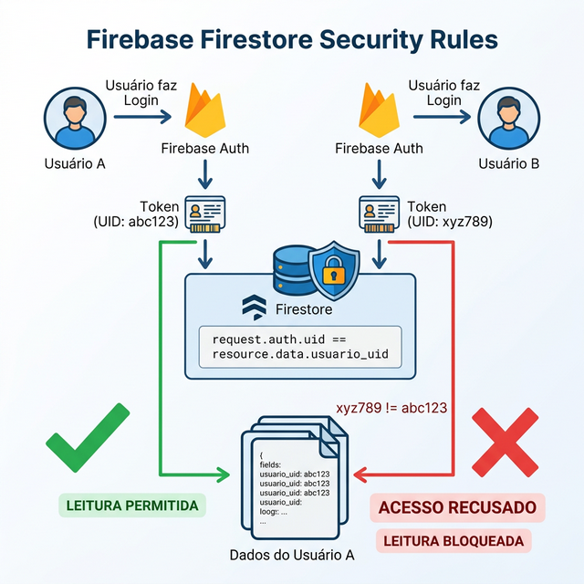
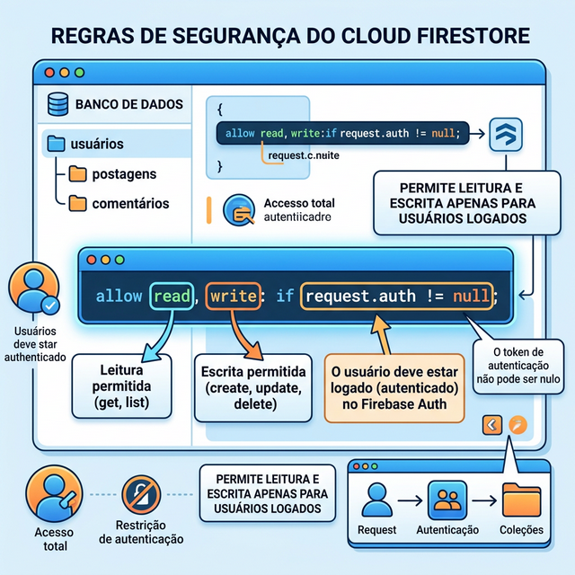

SEMANA 9 – Segurança com Firestore Security Rules
Nesta semana, você irá configurar as regras de segurança (Security Rules) no Firestore, garantindo que cada usuário acesse apenas os seus próprios dados — mesmo que tente acessar diretamente pela API.
Até a Semana 6, seu banco de dados operava de "portas abertas" (modo de teste), permitindo que qualquer pessoa autenticada manipulasse qualquer dado. Esse é um risco imenso no mundo real. Agora, você implementará a filosofia de Portas Fechadas por Padrão usando as Security Rules: o banco bloqueia tudo inicialmente, e você abre apenas brechas cirúrgicas protegidas por contexto (exemplo: "este usuário só lê o que for dele").
|
Sem regras de segurança adequadas, qualquer usuário autenticado poderia, em teoria,
ver e modificar os dados de todos os outros — basta conhecer
o ID do documento. As Security Rules são a camada de segurança que impede isso,
filtrando automaticamente as operações com base no
|
Fonte: Firebase Documentation — Security Rules. |
9.1 O que são Firestore Security Rules
|
Firestore Security Rules: conjunto de regras declarativas que controlam quais documentos cada usuário pode ler, criar, atualizar ou excluir. As regras são escritas em uma linguagem própria do Firebase e publicadas diretamente no console ou via CLI. |
A Figura 9.1 ilustra como as Security Rules funcionam na prática: o usuário
faz login (recebe um token com seu uid), e ao consultar o Firestore,
o servidor automaticamente verifica a regra definida
(request.auth.uid == resource.data.usuario_uid) antes de permitir a operação.

request.auth.uid == resource.data.usuario_uid).9.2 Configurando as Security Rules
- No console do Firebase, acesse Firestore Database → Rules (aba Regras).
- Substitua as regras de teste pelas regras de produção (veja o exemplo abaixo).
- Clique em Publish (Publicar) para ativar as novas regras.
|
A coleção |
9.3 Exemplo de Security Rules (Código Completo)
Veja abaixo as regras de segurança completas para as coleções do FinanCampus. O mesmo padrão pode ser aplicado a outras coleções que armazenem dados por usuário.
rules_version = '2';
service cloud.firestore {
match /databases/{database}/documents {
// Coleção: categorias
// Qualquer usuário autenticado pode ler
// Apenas admin pode criar/editar/excluir
match /categorias/{categoriaId} {
allow read: if request.auth != null;
allow write: if false; // restrito a admin (via console)
}
// Coleção: transacoes
// Usuário só acessa suas próprias transações
match /transacoes/{transacaoId} {
// Leitura: somente o dono da transação
allow read: if request.auth != null
&& request.auth.uid == resource.data.usuario_uid;
// Criação: usuário autenticado, campo usuario_uid deve ser o uid do autor
allow create: if request.auth != null
&& request.auth.uid == request.resource.data.usuario_uid;
// Atualização: somente o dono, e não pode alterar o usuario_uid
allow update: if request.auth != null
&& request.auth.uid == resource.data.usuario_uid
&& request.resource.data.usuario_uid == resource.data.usuario_uid;
// Exclusão: somente o dono
allow delete: if request.auth != null
&& request.auth.uid == resource.data.usuario_uid;
}
}
}
|
Após publicar as Security Rules, qualquer consulta sem token de autenticação válido será bloqueada. Isso é o comportamento esperado e correto. Certifique-se de que o login está funcionando (Semana 6) antes de publicar as regras de segurança. |
|
O Firebase console possui um Rules Playground integrado (botão ao lado do editor de regras). Use-o para simular operações de leitura e escrita com diferentes UIDs e verificar se as regras estão bloqueando ou permitindo corretamente cada cenário. |
Regras de Segurança Baseadas em Papéis (Role-Based Access Control)
Em sistemas mais completos, algumas coleções ou funcionalidades não são liberadas para todos os usuários autenticados, mas apenas para Administradores. Essa abordagem é chamada de Role-Based Access Control (RBAC) ou Controle de Acesso Baseado em Papéis.
No Firestore, a forma mais imediata de implementar isso (sem uso do Cloud Functions) é criando uma
coleção usuarios que possui um campo role (papel) definido como
'admin' ou 'user'. Nas regras, você faz a leitura deste documento do próprio
usuário para decidir a permissão.

// Função que verifica na coleção 'usuarios' se o atual tem role igual a 'admin'
function isAdministrador() {
return request.auth != null &&
get(/databases/$(database)/documents/usuarios/$(request.auth.uid)).data.role == 'admin';
}
match /conteudoRestrito/{documentId} {
allow read: if request.auth != null; // todos leem
allow write: if isAdministrador(); // só administradores editam
}
9.4 Testando a Segurança
Para validar que as Security Rules estão funcionando corretamente:
- Crie dois usuários diferentes no app (e-mails distintos).
- Com o Usuário A, crie uma transação qualquer.
- Faça logout e faça login com o Usuário B.
- Verifique que a transação do Usuário A não aparece na listagem do Usuário B — se não aparece, as regras estão funcionando!
- No console do Firebase, use o Rules Playground para tentar acessar a transação do Usuário A com o UID do Usuário B — a operação deve ser bloqueada.
9.5 Entregável da Semana
|
|
Use o prompt abaixo como ponto de partida para usar a IA como seu par nesta semana: "Preciso criar regras de segurança (Security Rules) para o Firebase Firestore. Terei uma coleção [nome da coleção] onde o campo 'id_criador' armazena o ID do usuário logado. Escreva a regra que permita aos usuários apenas ler, criar, atualizar e excluir os seus próprios documentos." |
Na próxima semana, você irá realizar os testes de integração completos do app e integrar APIs externas ao seu projeto.
9.6 Estudo de Caso: FinanCampus
Veja como o grupo do FinanCampus configurou as Security Rules nesta semana.
|
Security Rules configuradas em todas as coleções:
Teste de isolamento: criaram dois usuários (aluno1@teste.com e aluno2@teste.com). Cada um inseriu 3 transações. Ao alternar entre as contas, a listagem exibiu apenas as transações do usuário logado ✅. Tentativa de acesso via Rules Playground com UID diferente resultou em operação bloqueada ✅. |